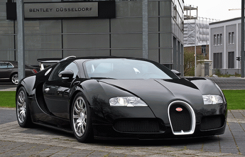

Автомобиль (или автомобиль ) является колесное транспортное средство используется для перевозки . В большинстве определений автомобилей говорится, что они в основном ездят по дорогам, вмещают от одного до восьми человек, имеют четыре шины и в основном перевозят людей, а не товары. [2] [3] Автомобили стали широко использоваться в 20-м веке, и от них зависит развитая экономика . 1886 год считается годом рождения современного автомобиля, когда немецкий изобретатель Карл Бенц запатентовал свой Benz Patent-Motorwagen . Автомобили стали широко доступны в начале 20 века. Одним из первых автомобилей, доступных для широких масс, был американский автомобиль 1908 года выпуска T , выпускаемый компанией Ford Motor Company . Автомобили были быстро приняты в США, где они заменили гужевые повозки и повозки, но потребовалось гораздо больше времени, чтобы быть принятыми в Западной Европе и других частях мира. Автомобили имеют элементы управления для вождения, парковки, комфорта пассажиров и безопасности, а также для управления различными огнями. На протяжении десятилетий дополнительные функции и элементы управления были добавлены в транспортные средства, что делает их все более сложными. К ним относятся камеры заднего хода, кондиционер , навигационные системы и автомобильные развлечения . Большинство автомобилей в использовании в 2010s приводятся в движение с помощью двигателя внутреннего сгорания , работающих на сжигании из ископаемого топлива . Электромобили , которые были изобретены в начале истории автомобиля, стали доступны в продаже в 2008 году. Есть затраты и выгоды для использования автомобиля. Расходы включают в себя приобретение автомобиля, выплаты процентов (если автомобиль финансируется), ремонт и техническое обслуживание , топливо, амортизация , время вождения, сборы за парковку , налоги и страхование. [4] Издержки для общества включают содержание дорог , землепользование , заторы на дорогах , загрязнение воздуха , здравоохранение , здравоохранение и утилизацию автомобиля в конце его жизни. Дорожно-транспортные происшествия являются самой большой причиной смертельных случаев в мире, связанных с травмами. [5] Преимущества включают транспортировку по требованию, мобильность, независимость и удобство. [6] Социальные выгоды включают в себя экономические выгоды, такие как создание рабочих мест и повышение благосостояния в автомобильной промышленности , обеспечение транспорта, социальное благосостояние от возможностей отдыха и путешествий, а также получение доходов от налогов . Способность людей гибко перемещаться с места на место имеет далеко идущие последствия для природы общества. [7] В мире используется около 1 миллиарда автомобилей. Числа быстро растут, особенно в Китае , Индии и других новых индустриальных странах . [8] Этимология Считается, что слово « автомобиль» происходит от латинского слова « carrus» или « carrum» («колесное транспортное средство») или от среднеанглийского слова « carre» (что означает «двухколесная тележка » от древне-северного французского ). В свою очередь, они произошли от галльского слова каррос ( галльская колесница ). [9] [10] Первоначально оно относилось к любому колесному гужевому транспортному средству , такому как тележка, карета или повозка. [11] [12] «Автомобиль» засвидетельствован с 1895 года и является обычным формальным названием автомобилей в британском английском., [3] «Автокар» является вариантом, который также засвидетельствован с 1895 года, но теперь считается архаичным. Это буквально означает «самоходная машина». [13] Термин « карета без лошадей » использовался некоторыми для обозначения первых автомобилей в то время, когда они были построены, и засвидетельствован с 1895 года. [14] Слово «автомобиль» является классическим соединением, образованным от древнегреческого слова autós (αὐτός), означающего «я», и латинского слова mobilis , означающего «подвижный». Это вошло в английский язык от французского , и было впервые принято Автомобильным клубом Великобритании в 1897 году. [15] Со временем слово «автомобиль» перестало пользоваться популярностью в Британии и было заменено словом «автомобиль». «Автомобиль» остается в основном североамериканским, особенно в качестве официального или коммерческого термина. [16]Сокращенная форма «авто» раньше была обычным способом обозначать автомобили на английском языке, но теперь считается старомодной. Слово все еще очень распространено как прилагательное в американском английском, обычно в сложных формах, таких как «автомобильная промышленность» и « автомеханик ». [17] [18] В голландском и немецком языках два языка исторически связаны с английским, сокращенная форма «auto» (голландский) / «Auto» (немецкий), а также формальная полная версия «automobiel» (голландский) / » «Автомобили» (по-немецки) все еще используются - в любом кратком виде это наиболее употребительное слово для «автомобиля». Крупномасштабное серийное производство доступных по цене автомобилей было начато Рэнсом Олдсом в 1901 году на его фабрике Oldsmobile в Лансинге, штат Мичиган, и основано на методах стационарных сборочных линий , впервые примененных Марком Исамбардом Брунелем на заводе в Портсмут-Блоке , Англия, в 1802 году. Стиль сборочного конвейера массового производства и взаимозаменяемых деталей был впервые предложен в США Томасом Бланчардом в 1821 году в Спрингфилдском оружейном заводе в Спрингфилде, штат Массачусетс . [32] Эта концепция была значительно расширена Генри Фордомначиная с 1913 года с первой в мире движущейся сборочной линии для автомобилей на заводе Форд в Хайленд Парк . В результате автомобили Ford сошли с конвейера с пятнадцатиминутными интервалами, намного быстрее, чем предыдущие методы, увеличив производительность в восемь раз, используя при этом меньше рабочей силы (с 12,5 человеко-часов до 1 часа 33 минут). [33] Это было так успешно, краска стала узким местом. Только Япония черная высохнут достаточно быстро, вынуждая компанию понизить разнообразие цветов , доступных до того 1913 года, до быстрой сушки Duco лак был разработан в 1926 году является источником Форда апокрифического замечания, «любого цвета, пока он черный» , [33] В 1914 году работник конвейера мог купить модель Т с четырехмесячной оплатой. [33] Сложные процедуры безопасности Ford - особенно назначение каждого работника в определенное место вместо того, чтобы позволять им бродить - резко снизили уровень травмы. Сочетание высокой заработной платы и высокой эффективности называется « фордизм » и было скопировано большинством основных отраслей промышленности. Повышение эффективности от конвейера также совпало с экономическим подъемом Соединенных Штатов. Сборочная линия заставляла рабочих работать в определенном темпе с очень повторяющимися движениями, что приводило к увеличению производительности на одного работника, в то время как другие страны использовали менее производительные методы. В автомобильной промышленности его успех был доминирующим и быстро распространился по всему миру, когда в 1911 году были основаны Ford France и Ford Britain, Ford Дания 1923, Ford Germany 1925; в 1921 Крупномасштабное серийное производство доступных по цене автомобилей было начато Рэнсом Олдсом в 1901 году на его фабрике Oldsmobile в Лансинге, штат Мичиган, и основано на методах стационарных сборочных линий , впервые примененных Марком Исамбардом Брунелем на заводе в Портсмут-Блоке , Англия, в 1802 году. Стиль сборочного конвейера массового производства и взаимозаменяемых деталей был впервые предложен в США Томасом Бланчардом в 1821 году в Спрингфилдском оружейном заводе в Спрингфилде, штат Массачусетс . [32] Эта концепция была значительно расширена Генри Фордомначиная с 1913 года с первой в мире движущейся сборочной линии для автомобилей на заводе Форд в Хайленд Парк . В результате автомобили Ford сошли с конвейера с пятнадцатиминутными интервалами, намного быстрее, чем предыдущие методы, увеличив производительность в восемь раз, используя при этом меньше рабочей силы (с 12,5 человеко-часов до 1 часа 33 минут). [33] Это было так успешно, краска стала узким местом. Только Япония черная высохнут достаточно быстро, вынуждая компанию понизить разнообразие цветов , доступных до того 1913 года, до быстрой сушки Duco лак был разработан в 1926 году является источником Форда апокрифического замечания, «любого цвета, пока он черный» , [33] В 1914 году работник конвейера мог купить модель Т с четырехмесячной оплатой. [33] В автомобильной промышленности его успех был доминирующим и быстро распространился по всему миру, когда в 1911 году были основаны Ford France и
